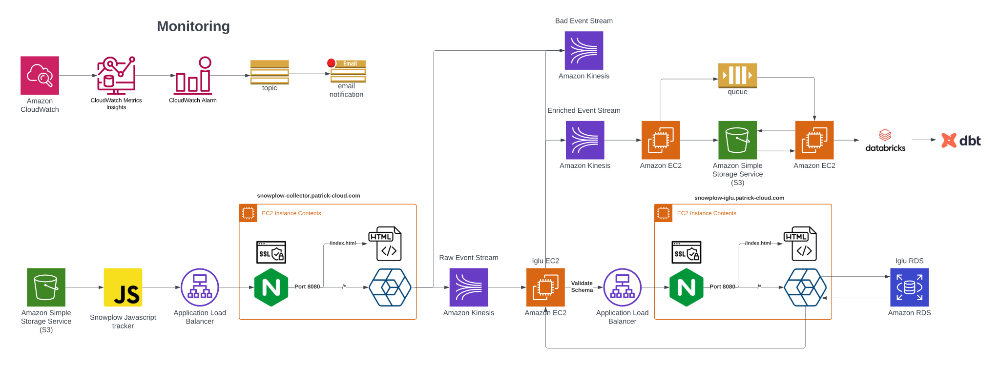
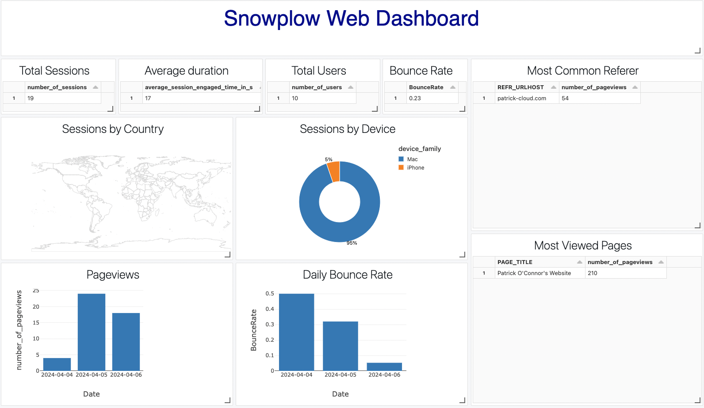

Snowplow Architecture

Architecture Decisions
- Terraform - I customized the Collector and Iglu terraform modules so there was one ALB for all patrick-cloud.com traffic. Also, I ran Nginx on the server to allow ssl traffic from the ALB to the EC2 via self-signed certificates. Nginx listens on port 443(also 80 but redirects traffic to 443) and forwards the traffic to 0.0.0.0:8080 which the Snowplow application is listening on.
- Security - All EC2's are in private subnets so only access to them is through the ALB. Kinesis, SQS, SNS and Secrets Manager are all encrypted with a CMK for fine grain IAM. SQS and Kinesis have access policies defined for further IAM.
- Metrics Collecting - Prometheus scrapes metrics from the Collector application I exposed on port 8125.
- Monitoring - Each application is sending logs to Cloudwatch. A Cloudwatch Metric Filter is set up on each log group to look for the pattern 'ERROR' with an attached Cloudwatch Alarm that will send an emai when triggered.
- Alarms - The standard AWS alarms are applied to EC2, Kinesis, SQS, SNS and RDS. These alarms will also send an email when triggered.
- EC2 - Error log detection, High CPU, Low CPU
- Kinesis - Put records success rate, Get records success rate, Age of message in stream
- SQS - Age of oldest message, Number of messages visisble, number of messages invisible
- S3 - 4XX errors, 5XX errors
- Loader - Data is loaded into the Databricks warehouse where DBT is set up to run and process the event data. A Dashboard is produced below based on a Databricks notebook.

Consoles
- Snoplow Collector EC2 - Nginx directs traffic to index.html
- Snoplow Iglu EC2 - Nginx directs traffic to index.html
Event Customization
I created a custom snowplow event "Sample Input" that reads data from an input from the text box below. I had to add a custom schema to my Iglu Registry so the event could be validated.
Events Tracked
The following events are collected by the JavaScript Tracker.
- Page Views
- Activity(Page pings)
- Sessions
- Link clicks
- Forms
- Browser
- Geo Location
- Client Hints
- Sample Input - Custom metric I created to track input into the message box.
Enrichments
- UA parser - This enrichment uses the ua-parser library to parse the user agent and provide information about the user's device.
- YAUAA - It uses YAUAA API to parse and analyze all user agent information of an HTTP request and extract as many relevant information as possible about the user's device and browser, like for instance the device class (Phone, Tablet, etc.).
- Event fingerprint - This enrichment computes the fingerprint of an event using the query string parameters.
- Campaign attribution - This enrichment can be used to link events to marketing campaigns, using the query string parameters.
- Referer parser - This enrichment uses snowplow referer-parser library to extract attribution data from referer URLs.
- © Untitled
- Design: HTML5 UP